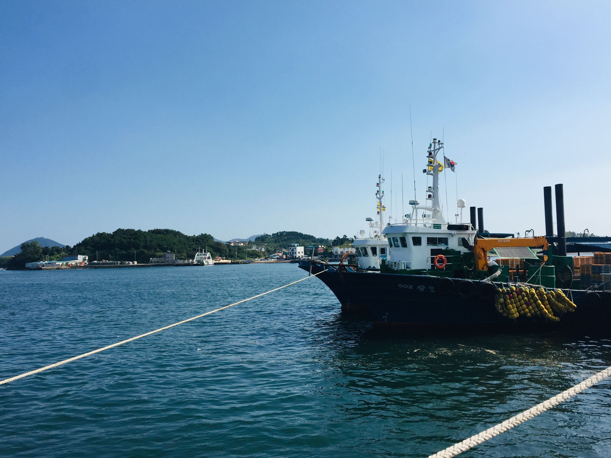

선원이주노동자인권네트워크는 어업 이주노동자들의 인권을 옹호하기 위한 단체들의 네트워크로서
모두가 평등하고 안전하게 일하는 바다를 만들기 위해 연대합니다.
선원이주노동자인권네트워크는 어업 이주노동자들의 인권을 옹호하기 위한 단체들의 네트워크로서,
아래의 단체들이 굳게 연대하여 함께하고 있습니다.
선박 내에서 발생하는 인권 침해, 임금 체불, 폭력 등의 문제에 대해 상담하고 구제 절차를 지원합니다.
선원이주노동자들의 열악한 노동 환경을 바꾸기 위해 관련 법령과 제도를 연구하고 변화를 촉구합니다.
바다 위의 인권 문제를 널리 알리고, 국내외 인권·노동·시민사회 단체들과 협력하여 연대망을 구축합니다.
